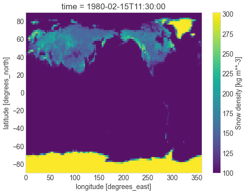
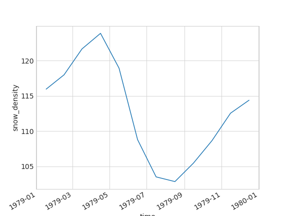
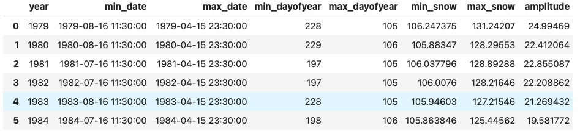

Lab Session 6: Climate data and xarray#
Statistics 159/259, Spring 2022
Prof. F. Pérez and GSI F. Sapienza, Department of Statistics, UC Berkeley.
03/10/2022
Menu for today:
Introduction to xarray. We will be usign xarry to manipulate climate data.
Working with ERA 5 data. As an example, we are going to practice data manipulation and visualization with xarray using a different climate dataset.
Useful links:
Introduction to xArray (lecture notes)
Acknowledgment: Large part of the contents in this notebook were done by Dr. Chelle Gentemann.
# Run this cell to set up your notebook
import matplotlib.pyplot as plt
import numpy as np
import pandas as pd
#import seaborn as sns
import xarray as xr
#import os
from pathlib import Path
# Small style adjustments for more readable plots
plt.style.use("seaborn-whitegrid")
plt.rcParams["figure.figsize"] = (8, 6)
plt.rcParams["font.size"] = 14
/tmp/ipykernel_837/1977167424.py:12: MatplotlibDeprecationWarning: The seaborn styles shipped by Matplotlib are deprecated since 3.6, as they no longer correspond to the styles shipped by seaborn. However, they will remain available as 'seaborn-v0_8-<style>'. Alternatively, directly use the seaborn API instead.
plt.style.use("seaborn-whitegrid")
We will work with the global ERA5 dataset.
DATA_DIR = Path.home()/Path('shared/climate-data')
monthly_2deg_path = DATA_DIR / "era5_monthly_2deg_aws_v20210920.nc"
ds = xr.open_dataset(monthly_2deg_path)
EXPLORATION
Question 1#
Plot the average temperature as a function of the latitude:
# BEGIN SOLUTION
ds.mean(("longitude", "time")).air_temperature_at_2_metres.plot()
# END SOLUTION
[<matplotlib.lines.Line2D at 0x7fa2811b93a0>]

Question 2#
Plot the yearly average temperature. That is, time series where the x-axis are the years and the y-axis is the averaged yearly temperature over all latitude and longitudes. Repeat this analysis separately for borh south and north hemispheres.
Remember to weight the averages by longitude!!! We did this in class using the weigthed mean:
weights = np.cos(np.deg2rad(ds.latitude))
weights.name = "weights"
weights.plot();

ds_weighted = ds.weighted(weights)
ds_weighted
DatasetWeighted with weights along dimensions: latitude
# BEGIN SOLUTION
ds_weighted.mean(("latitude", "longitude")).groupby(ds.time.dt.year).mean().air_temperature_at_2_metres.plot(marker='o', label="Weighted")
ds.groupby(ds.time.dt.year).mean().mean(("latitude", "longitude")).air_temperature_at_2_metres.plot(marker='o', label="non-weighted")
plt.legend()
# END SOLUTION
<matplotlib.legend.Legend at 0x7fa28b04c700>

2. Exploring Snow with ERA 5#
Now, we turn our attention to other questions - ERA5 a very rich and interesting dataset, and the lecture only scratched its surfac!
We are going today to focus on just one more bit: we’ll take a look at the snow accumulation data for the northern and southern hemispheres.
But you should see this as an invitation to keep learning from these data! Think of looking at other variables in the dataset. Is there annual cycle? trend? Some of the data might look very different than the air temperature - eg. precipitation which is either 0 or +. Can you use PDFs to look at changes in distributions over a region? at a point? Or talk about the data a little & what you understand it is measuring? Are any of the data variables related to each other? Can you plot correlations between data?
mean_map = ds.mean("time") # takes the mean across all variables in ds
mean_map.snow_density.plot();

What are the units of this? Where can you find that information?
snow = ds.snow_density
Question 3#
Let’s look at the snow across the globe in February and August, which are roughly the peaks of the summer/winter seasons.
Recreate the following figure, along with a corresponding one for August 1980:
{kind=link}
# BEGIN SOLUTION
snow.sel(time='1980-02').plot();
# END SOLUTION

Question 4#
Let’s now find the peaks in the northern and southern hemispheres. Plot a time series of density of ice coverage for both the north and south hemisphere.
# BEGIN SOLUTION
ds_south = ds.sel(latitude=slice(-90,0))
ds_north = ds.sel(latitude=slice(0,90))
weights_south = np.cos(np.deg2rad(ds_south.latitude))
weights_north = np.cos(np.deg2rad(ds_north.latitude))
ds_south_weigthed = ds_south.weighted(weights_south)
ds_north_weigthed = ds_north.weighted(weights_north)
#t_snow_south = snow.sel(latitude=slice(-90,0)).mean(('latitude', 'longitude')) # this is without weights
t_snow_south = ds_south_weigthed.mean(("latitude", "longitude")).snow_density
t_snow_south.plot();
#t_snow_north = snow.sel(latitude=slice(0,90)).mean(('latitude', 'longitude')) # this is without weigths
t_snow_north = ds_north_weigthed.mean(("latitude", "longitude")).snow_density
t_snow_north.plot();
# END SOLUTION
Question 5#
Let’s look for example at what the cycle in the northern hemisphere looks like for the year 1979. You need to replicate this figure:
{kind=link}
# BEGIN SOLUTION
t_snow_north.isel(time=t_snow_north.time.dt.year==1979).plot();
# END SOLUTION
Question 6#
And finally, we’re going to find the peaks for the maximum and minimum snow accumulation in both hemispheres, and study when those peaks happen, how much snow there is, and whether the amounto of total snow is going up or down.
You’ll need to recreate a dataframe like the one pictured here (only a few rows shown, and this is for the northern hemisphere, you’ll make one for each hemisphere):
{kind=link}
Hint: look up the documentation for the xarray idxmax method.
Hint:
First, we want to extract the years from the data and iterate over them (try using
range).When iterating over the years, we want to first pick the designated year, then find the days with the most and least snow as well as the amount of snow on those days.
Once we’ve found the days, assign
valsto be an array of the information we’ve calculated.Finally, append all the necessary information to
peaks.
Amplitude is
max - minYou may want to use
x.values.itemto extract information from the datetime objects.
def extract_peaks(snow_data):
# BEGIN SOLUTION
yy = snow_data.time.dt.year
min_y, max_y = yy.min().values.item(), yy.max().values.item()
# END SOLUTION
years = range(min_y, max_y + 1) # SOLUTION
peaks = []
for y in years:
# BEGIN SOLUTION
snow_year = snow_data.isel(time = snow_data.time.dt.year == y)
min_d, max_d = snow_year.idxmin(), snow_year.idxmax()
min_v, max_v = snow_year.sel(time = min_d), snow_year.sel(time = max_d)
min_day, max_day = min_d.dt.dayofyear, max_d.dt.dayofyear
# END SOLUTION
vals = [x.values.item() for x in [min_day, max_day, min_v, max_v, (max_v-min_v)]] # SOLUTION
# BEGIN SOLUTION
peaks.append([y, min_d.values, max_d.values] + vals)
# END SOLUTION
snow_peaks = pd.DataFrame(peaks,
columns = ['year', 'min_date', 'max_date',
'min_dayofyear', 'max_dayofyear',
'min_snow', 'max_snow', 'amplitude'])
return snow_peaks
peaks_north = extract_peaks(t_snow_north)
With this data, we can now quickly explore several questions. For example, during what day of the year do the min and max happen?
plt.plot('year', 'min_dayofyear', 'o-', data=peaks_north);
plt.plot('year', 'max_dayofyear', '.-', data=peaks_north);
plt.legend();

What is the min and max amount of snow at those times?
plt.plot('year', 'min_snow', data=peaks_north);
plt.plot('year', 'max_snow', data=peaks_north);
plt.legend();
Given the difference in scales, it’s a bit easier to see what is happening if we plot the min and max separately:
plt.plot('year', 'min_snow', data=peaks_north);
plt.plot('year', 'min_snow', 'r.', data=peaks_north);
plt.legend();
plt.plot('year', 'max_snow', data=peaks_north);
plt.plot('year', 'max_snow', 'r.', data=peaks_north);
plt.legend();

What do you think this is telling us about the ice in the northern hemisphere? What are the main sources of ice there, and what is happening to them?
The above figures are for the northern hemisphere. Repeat them for the southern one. What do you observe? Any differences?
I hope this lab has taught you some useful skills regarding tools like xarray and data with a different structure than data frames. But more importantly, that it has shown you how the ideas from this course also apply to problems as critical to humanity as climate change, and that you have the foundations on which to better understand these questions.
Don’t stop here! This dataset is fascinating, and both the lecture and the lab were barely an appetizer!